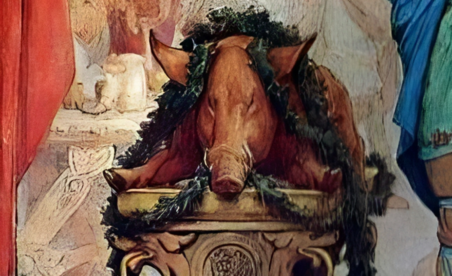

Saehrimnir

Mythical roasted boar on a tray
Amid the heroic songs of fallen skalds, these maidens brought the warriors vast quantities of meat from the cosmic boar Sæhrimnir, prepared by the cook of the gods Andhrimnir in his magical Eldhrimnir cauldron. Having finished the banquet, the boar's remains were gathered and brought back to life for a next meeting.
Ingredients
- Mythical boar
- Eldhrimnir (or any big sized magical cauldron)
- Valhalla's mead
- Pepper
- Salt
- Nutmeg
- Onions, chopped
- Idun's apple
Steps
- While Andhrimnir is hunting a Saehrimnir, blend the mead with pepper and salt, nutmeg and some onions (you can caramelize it for better flavour).
- Put the boar inside the cauldron and fill it with the sauce halfway.
- Leave the cauldron over high heat about 40 min (or more to the taste of each one) at 360º and turn the meat so that it is well impregnated with all the flavor and aroma that the mead has.
- Serve the boar in a tray, with an Idun's apple on its mouth.